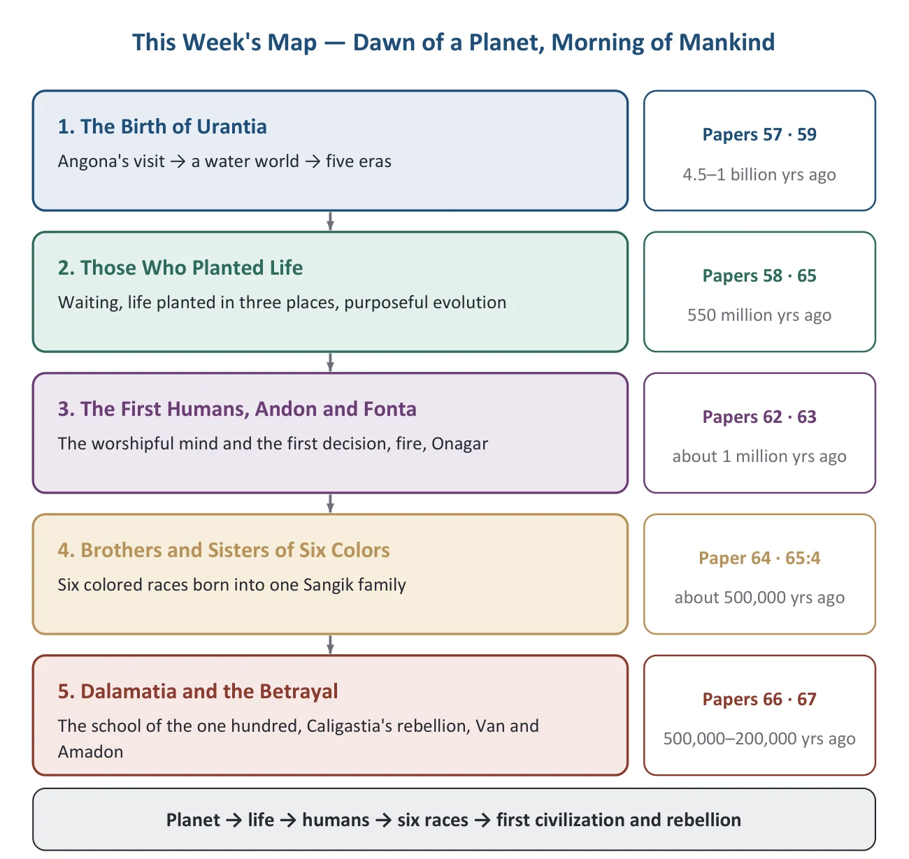
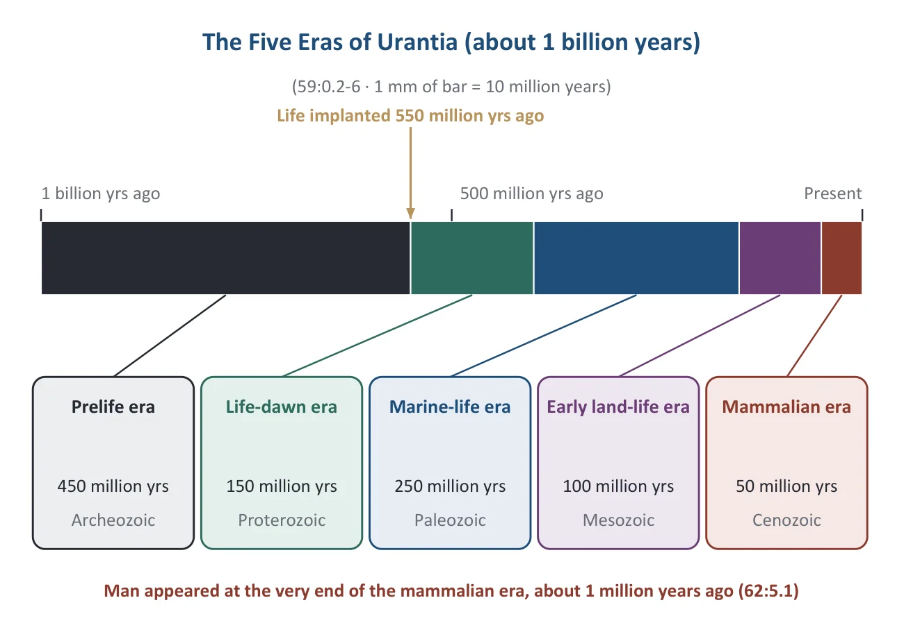
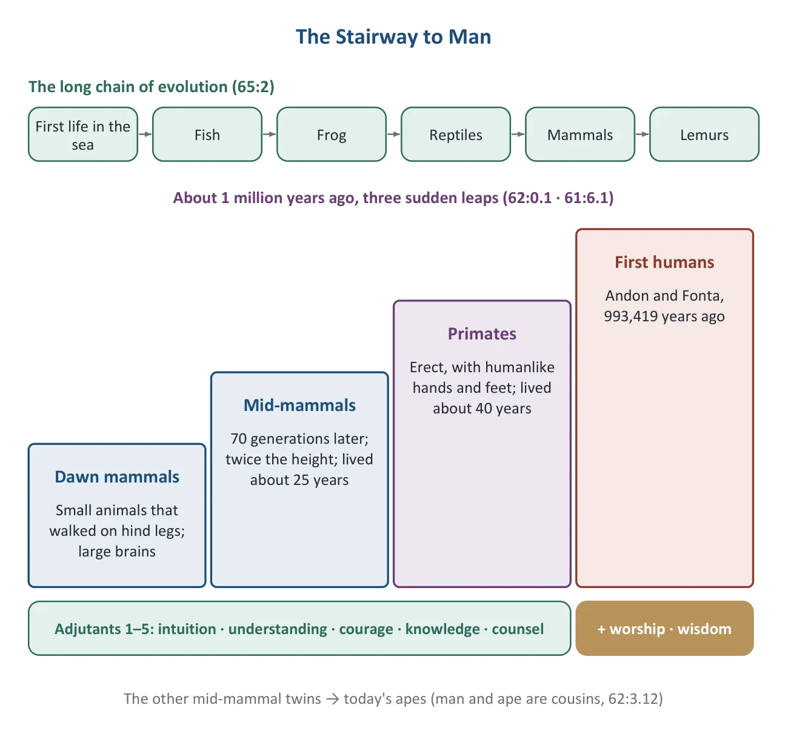
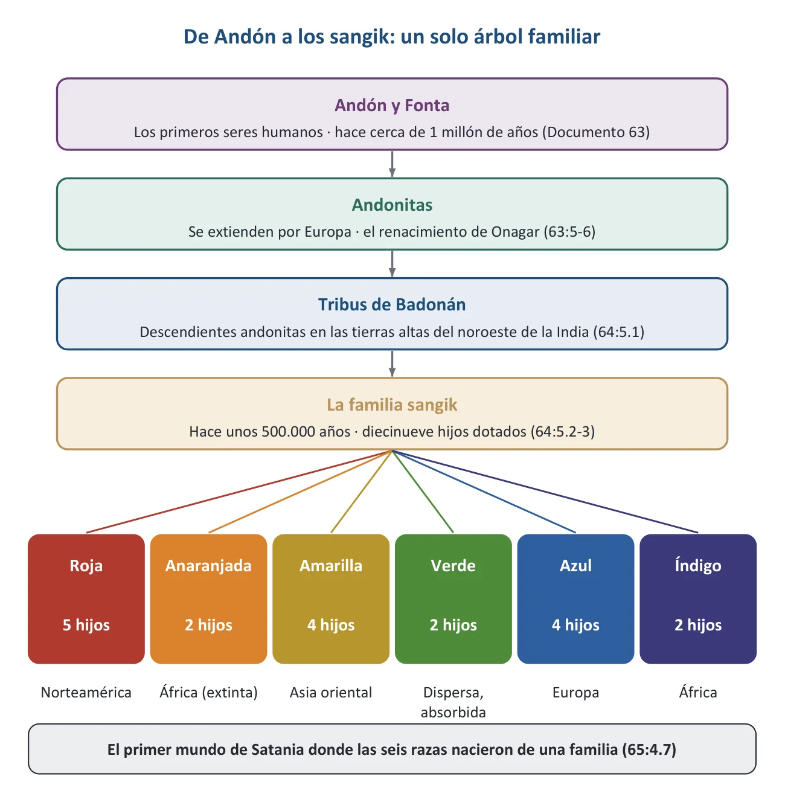
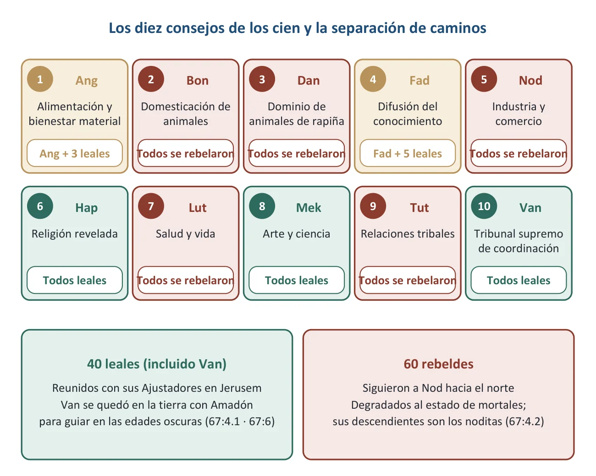

Lectura: Documento 57:5, 8 · Documento 58:1, 4, 6 · Documento 59 (introducción) · Documentos 62–65 · Documentos 66–67 (introducción del documento 68)

La tercera parte es la historia de nuestro propio planeta, Urantia. Los Portadores de Vida esperaron a que el mundo madurara y luego implantaron la vida en sus mares, y esa vida subió la larga escalera de una evolución con propósito hasta llegar, hace alrededor de un millón de años, a los primeros seres humanos, Andón y Fonta. Hace alrededor de medio millón de años nacieron en una sola familia las seis razas de color, y por la misma época llegó el Príncipe Planetario, Caligastia, que fundó en Dalamatia la primera escuela de la humanidad. El Príncipe se unió a la rebelión, pero Van y Amadón se mantuvieron firmes hasta el final. Esta semana hojeamos el álbum más antiguo de nuestro hogar familiar.
Quien se ha detenido ante un talud cortado en una carretera de montaña ha visto las capas: tierra roja, arena gris, grava negra, apiladas una sobre otra como un pastel de capas. La capa de abajo es la más antigua, y cada capa superior se acerca más a nuestro tiempo. Visto de lado, el corte se parece un poco a un libro en un estante. Solo que este libro es de piedra, y cada página tardó miles de años en depositarse.
La tercera parte de El libro de Urantia nos invita a leer juntos este libro de piedra. Durante siete semanas hemos viajado hacia fuera desde el Paraíso, a través del superuniverso y del universo local. Ahora, al final de ese largo camino, abrimos la puerta de nuestro propio hogar. Y este hogar no es un trozo de roca surgido por casualidad; fue preparado mediante una larga espera y el cuidado de muchas manos.
El documento 57 comienza hace cinco mil millones de años con un sol joven que ardía solo en el espacio. Entonces se acercó un visitante enorme.
Hace 4.500.000.000 de años el enorme sistema Angona comenzó a aproximarse a este sol solitario. El centro de este gran sistema era un gigante oscuro del espacio, sólido, altamente cargado, y poseedor de una tremenda atracción de gravedad.57:5.4
Mientras el sistema Angona se acercaba, las expulsiones solares se hacían cada vez más grandes; el sol arrojaba cada vez más materia, que se convertía en cuerpos independientes que circulaban por el espacio circundante. Esta situación se desarrolló durante quinientos mil años, hasta que Angona realizó su acercamiento más próximo al sol; después de lo cual el sol, conjuntamente con una de sus convulsiones internas periódicas, experimentó un quebrantamiento parcial; y en ese momento enormes volúmenes de materia se vertieron simultáneamente y desde lados opuestos. Del lado de Angona iba siendo atraída una vasta columna de gases solares, más bien puntiaguda hacia los dos extremos y marcadamente protuberante por el centro, que se desprendió permanentemente del control inmediato de la gravedad del sol.57:5.6
Esta gran columna de gases solares que de este modo se separó del sol posteriormente evolucionó para convertirse en los doce planetas del sistema solar.57:5.7
El libro llama Monmatia al sistema solar que nació así. Aquí conviene recordar un principio de la semana 1: una cosmología de este tipo organiza el conocimiento científico de su época y está sujeta a revisión (101:4.2). Lo que conservamos no son las cifras, sino el hilo principal: este hogar fue construido según un plan.
Hace 1.000.000.000 de años es la fecha en que de hecho comienza la historia de Urantia. El planeta había alcanzado aproximadamente su tamaño de hoy. Por estos tiempos se asentó en los registros físicos de Nebadon y se le dio el nombre de Urantia.57:8.1
A medida que la corteza se enfriaba, el vapor de agua se precipitó en forma de lluvia.
La verdadera historia geológica de Urantia empieza cuando la corteza terrestre se enfría lo suficiente para ocasionar la formación del primer océano. La condensación del vapor de agua sobre la superficie de la tierra que se estaba enfriando, una vez iniciada, prosiguió hasta que quedó prácticamente completa. Para el final de este período, el océano comprendía el ámbito global, cubriendo el planeta entero con una profundidad media de un kilómetro y medio.57:8.3
Al principio la tierra era un mundo de agua de polo a polo. Más tarde emergió un solo gran continente, y cuando se fragmentó y se desplazó, el mar penetró en él como dedos, formando bahías poco profundas y cálidas.
Fueron estos mares y sus sucesores los que asentaron las crónicas de vida de Urantia, tal como posteriormente se las descubrió en páginas de piedra bien conservadas, tomo tras tomo, en tanto que una era sucedía a otra, y de una edad nacía otra. Estos mares internos rodeados de tierra de tiempos pasados fueron, en verdad, la cuna de la evolución.57:8.26
CALCULAMOS que la historia de Urantia comenzó hace unos mil millones de años y engloba cinco eras principales:59:0.1
Estas cinco eras corresponden aproximadamente al Arqueozoico, el Proterozoico, el Paleozoico, el Mesozoico y el Cenozoico de los geólogos. Dibujada como una barra, la era de los mamíferos, en la que aparecieron los seres humanos, es solo un tramo corto al final de todo.

| Cuándo | Qué sucedió | Texto |
|---|---|---|
| Hace 4.500 millones de años | Aproximación del sistema Angona; origen de los planetas | 57:5.4-7 |
| Hace 1.000 millones de años | El planeta alcanza su tamaño actual; se registra como «Urantia» | 57:8.1 |
| Hace 550 millones de años | Los Portadores de Vida implantan la vida en los mares | 58:4.2 |
| Hace alrededor de 1 millón de años | Los primeros seres humanos, Andón y Fonta | 62:5.1 |
| Hace alrededor de 500.000 años | Seis razas de color; llegada del Príncipe Planetario | 64:5, 66:0.2 |
| Hace alrededor de 200.000 años | Rebelión de Caligastia (300.000 años después de la llegada del Príncipe) | 66:8.3, 67:2 |
| Hace 37.848 años | Llegada de Adán y Eva (la semana próxima) | 74:0.1 |
Los Portadores de Vida, a quienes conocimos en la semana 5, llegaron por primera vez a Urantia hace seiscientos millones de años para estudiar las condiciones. Sin embargo, no implantaron la vida de inmediato.
Que conste que los Portadores de Vida no pueden iniciar la vida hasta que una esfera esté del todo preparada para la inauguración del ciclo evolutivo. Tampoco podemos disponer un desarrollo vital más rápido que aquél que el progreso físico del planeta puede sustentar y acomodar.58:1.2
Posteriormente la comisión sataniana de Portadores de Vida retornó a Jerusem, prefiriendo aguardar a que se desintegrara más la masa terrestre continental, lo cual brindaría aún más mares interiores y bahías abrigadas, antes de empezar de hecho la implantación de la vida.58:1.6
Ni siquiera los seres celestiales apresuran la estación. Son como un agricultor que tiene la semilla en la mano y espera a que la tierra se deshiele.
Cincuenta millones de años después llegó el día.
Hace 550.000.000 de años el cuerpo de Portadores de Vida retornó a Urantia. En cooperación con los poderes espirituales y las fuerzas superfísicas, organizamos e iniciamos los modelos originales de vida de este mundo y los plantamos en las acogedoras aguas del ámbito. Toda vida planetaria (aparte de las personalidades extraplanetarias) hasta los tiempos de Caligastia, el Príncipe Planetario, tuvo su origen en nuestras tres implantaciones de vida marina, originales, idénticas y simultáneas. Estas tres implantaciones de vida se han designado como: la central eurasiático-africana, la oriental australasiática, y la occidental, englobando Groenlandia y las Américas.58:4.2
Los autores aclaran también un malentendido al que su nombre podría dar lugar.
El que nos llamemos Portadores de Vida no debe confundiros. Podemos portar vida a los planetas y lo hacemos, pero no trajimos vida alguna a Urantia. La vida en Urantia es única, original con el planeta.58:4.1
Aquel primer mar todavía fluye dentro de nosotros.
Vuestros antepasados primitivos circulaban libremente por el océano salado; hoy por hoy, esta misma solución salada parecida al océano circula libremente por vuestro cuerpo, bañando cada célula individual con un líquido químico que en toda su esencia es equiparable al agua salada que estimuló las primeras reacciones protoplásmicas de las primeras células vivientes que funcionaron en el planeta.58:1.4
El libro de Urantia no nos pide elegir entre la evolución y la creación. Las especies nuevas aparecen de repente, y no por la lenta acumulación de pequeñas variaciones, y el proceso es enteramente natural.
De era en era surgen especies de vida animal radicalmente nuevas. No evolucionan a consecuencia de la acumulación gradual de pequeñas variaciones, sino que despuntan a fuer de órdenes de vida nuevos, hechos y derechos y aparecen repentinamente.58:6.3
La aparición súbita de especies nuevas y órdenes diversificados de organismos vivientes es del todo biológica, estrictamente natural. No hay nada de lo sobrenatural vinculado con estas mutaciones genéticas.58:6.4
Al mismo tiempo, todo el proceso se desarrolla bajo un cuidado atento.
El funcionamiento integrado de los Portadores de Vida, de los controladores físicos, y de los espíritus ayudantes condiciona el curso de la evolución orgánica en los mundos habitados. Y por tanto, la evolución —en Urantia y en otras partes— siempre entraña un propósito y no es nunca fortuito.65:0.7
Los Portadores de Vida son como jardineros. No dan forma a los pétalos con la mano, pero abren canales para el agua, protegen las plantas jóvenes del exceso de sol y las ayudan a crecer. E incluso sus manos tenían límites.
Los Portadores de Vida pueden emplear todo recurso natural posible y utilizar todas y cada una de las circunstancias fortuitas que faciliten la marcha del desarrollo experimental de la vida; pero no se nos permite intervenir mecánicamente, ni manipular de forma arbitraria, la conducta ni el curso de la evolución vegetal ni animal.65:3.2
Este cuidado también tiene un final. Una vez que aparecen seres capaces de elegir por sí mismos, los Portadores de Vida se retiran, y lo que sigue queda confiado a manos humanas.
Lo que nosotros, los Portadores de Vida, hacemos por fomentar y conservar las especies de vida antes de la aparición de la voluntad humana, ha de hacer el hombre mismo tras tal acontecimiento y posteriormente a nuestro retiro de la participación activa en la evolución. En modo general, el destino evolucionario del hombre está en sus propias manos, y la inteligencia científica, tarde o temprano, tiene que reemplazar el funcionamiento aleatorio de la selección natural incontrolada y la supervivencia casual.65:3.6
Estas palabras son a la vez graves y gloriosas. Dios no mantiene a sus hijos para siempre como niños pequeños que solo reciben cuidados. El cuidado sabio del cuerpo, la mente y la sociedad está ahora en manos humanas, y que se nos confíe algo es también que se confíe en nosotros.
Un malentendido común: aceptar la evolución no deja lugar a Dios, y creer en Dios significa rechazar la evolución. Lo que dice El libro de Urantia: la aparición de especies nuevas es del todo natural (58:6.4), pero la evolución siempre tiene un propósito, porque los Portadores de Vida, los controladores físicos y los espíritus ayudantes la guían juntos (65:0.7). Los métodos de la naturaleza y el cuidado del cielo no están en conflicto.
En la época en que los glaciares cubrían la tierra, se produjeron tres saltos repentinos entre los descendientes del tipo lémur: los mamíferos protohumanos, los mamíferos intermedios y los primates.
Ahora pues, tras casi novecientas generaciones de desarrollo, abarcando alrededor de veintiún mil años desde el origen de los mamíferos protohumanos, los primates, súbitamente, dieron a luz a dos asombrosas criaturas, los primeros verdaderos seres humanos.62:4.6
Aquí se aclara también la relación entre los seres humanos y los simios.
De este modo se ve fácilmente que el hombre y el mono están emparentados sólo porque los dos descendieron de los mamíferos intermedios, una tribu en la cual ocurrieron los nacimientos contemporáneos y la subsiguiente segregación de dos parejas de gemelos: la pareja inferior destinada a producir los tipos modernos de mono, babuino, chimpancé y gorila; la pareja superior destinada a continuar la línea de ascenso que llegó a ser, por evolución, el hombre mismo.62:3.12

Lo que hizo verdaderamente humanos a los dos primeros seres humanos no fue tanto su cuerpo como su mente.
Muchas emociones nuevas aparecieron tempranamente en estos gemelos humanos. Manifestaban admiración tanto por los objetos como por otros seres y exhibían considerable vanidad. Pero el adelanto más extraordinario en el desarrollo emocional fue la aparición repentina de un grupo de sentimientos nuevos que eran realmente humanos: el grupo dado a la adoración, que comprendía el pavor, la reverencia, la humildad, e incluso una forma primitiva de gratitud.62:5.4
Los siete espíritus ayudantes de la mente que conocimos en la semana 5 son ministros de la mente enviados por el Espíritu Materno. Los Portadores de Vida los vieron entrar en acción uno tras otro. Los espíritus de intuición, comprensión, valor, conocimiento y consejo alcanzaron sucesivamente el cerebro animal, y los dos espíritus más elevados actuaron por primera vez en estos gemelos. También en la escalera de la mente fueron los dos últimos peldaños los que separaron a los seres humanos de los animales.
Imaginaos nuestro regocijo un día —cuando los gemelos tenían unos diez años— en que el espíritu de adoración hizo su primer contacto con la mente de la gemela y, poco tiempo después de esto, con la del gemelo. … cuando, al año, resolvieron finalmente, como resultado de un pensamiento meditativo y de una decisión basada en un propósito, huir de la querencia y viajar al norte, entonces comenzó a funcionar el espíritu de la sabiduría en Urantia y en estas dos mentes ya reconocidas como humanas.62:6.5
Al tercer día después de que los gemelos dejaran su hogar, llegó el primer mensaje de Salvington.
Se ha notado la decisión ex profeso de los gemelos de huir hacia el norte y de segregar su prole de sus antepasados inferiores. Ésta es la primera decisión de la mente —del tipo humano de mente— en Urantia y automáticamente establece el circuito de comunicación por el cual este mensaje inicial de reconocimiento se está transmitiendo.»62:7.3
Hace sólo 993.408 años (contando hasta el año 1934 d. de J.C.) que Urantia se reconoció formalmente como planeta de habitación humana en el universo de Nebadon. La evolución biológica nuevamente había conseguido los niveles humanos de dignidad volitiva; el hombre ya había llegado al planeta 606 de Satania.62:7.7
Una sola decisión, tomada por el pensamiento y no por el instinto, envió una señal al cielo. Ser humano empieza por elegir.
Los arcángeles llamaron a la pareja Andón y Fonta, que significan la primera criatura a semejanza del Padre y la primera criatura a semejanza del Hijo «en exhibir el ansia humana por la perfección» (63:0.3).
En muchos aspectos, Andón y Fonta fueron la pareja más extraordinaria de seres humanos que jamás hubiera vivido en la faz de la tierra. Esta pareja maravillosa, que vienen a ser los padres de todo el género humano, era a todas luces superior a gran parte de sus descendientes inmediatos, y era radicalmente distinta de todos sus antepasados, tanto inmediatos como remotos.63:1.1
En el viaje hacia el norte, Andón se fijó en la chispa que salta de un pedernal.
Cada día esta pareja golpeaba las piedras y se esforzaban por prenderle fuego al palo. Al fin, una tarde, a la hora de ponerse el sol, se desenmarañó el secreto de la técnica al ocurrírsele a Fonta subirse a un árbol próximo para conseguir el nido abandonado de un pájaro. El nido estaba seco y sumamente inflamable; por consiguiente, justamente al caerle la chispa, se originó una llamarada que produjo un fuego abundante.63:2.5
A medida que sus descendientes se dispersaban, fueron retrocediendo poco a poco. Entonces surgió un maestro.
A medida que la dispersión andónica se extendía, la calidad cultural y espiritual de los clanes iba empeorando durante casi diez mil años, hasta los días de Onagar, quien asumió el mando de estas tribus, sembró la paz entre ellas, y por primera vez, les guió a todos en la adoración de «El que da aliento a los hombres y los animales».63:6.1
«Oh Aliento de la Vida, danos nuestro sustento de este día, redímenos de la calamidad del hielo, sálvanos de nuestros enemigos del bosque, y con gran misericordia recíbenos en el Gran Más Allá».63:6.6
Frente al hambre, el frío y las fieras, seguían anhelando el Gran Más Allá. Y ese anhelo no fue en vano.
Andón y Fonta, los espléndidos fundadores de la raza humana, recibieron reconocimiento cuando, a la llegada del Príncipe Planetario, hubo la adjudicación en Urantia, y a su debido momento surgieron del régimen de los mundos de estancia con el estado de ciudadanía en Jerusem. Bien que nunca se les ha permitido volver a Urantia, conocen la historia de la raza que fundaron. Se dolieron de la traición de Caligastia, se lamentaron del fracaso de Adán, pero se regocijaron sobremanera al recibir el aviso de que Micael había seleccionado su mundo para el escenario de su último autootorgamiento.63:7.1
Un malentendido común: si hablamos de evolución, queremos decir que los seres humanos descienden de los monos. Lo que dice El libro de Urantia: los seres humanos y los simios son solo primos lejanos que se separaron del mismo grupo de mamíferos intermedios; no proceden de los mismos padres (62:3.12-13).
Durante alrededor de medio millón de años después de Andón y Fonta, la humanidad pasó por guerras y decadencias repetidas. Entonces sucedió algo notable entre las tribus badonitas de las tierras altas del noroeste de la India.
En este momento, aconteció algo novedoso y extraño entre estos badonitas de las tierras altas. Un hombre y una mujer que vivían en la parte nordeste de la región que estaba habitada en ese entonces, comenzaron repentinamente a producir una progenie singularmente inteligente. Ésta fue la familia sangik, los antepasados de las seis razas de color de Urantia.64:5.2
Estos hijos sangik, diecinueve en total, no sólo eran más inteligentes que sus semejantes, sino que su piel manifestaba una tendencia insólita a volverse de colores distintos al exponerse a la luz del sol. Entre estos diecinueve hijos figuraron cinco rojos, dos anaranjados, cuatro amarillos, dos verdes, cuatro azules y dos índigos.64:5.3

En los planetas evolutivos medianos las seis razas evolutivas de color van apareciendo una por una; el hombre rojo es el primero en evolucionar, y durante edades vaga por el mundo, antes de que aparezcan por primera vez las razas sucesivas de color. El surgimiento simultáneo de las seis razas en Urantia, y dentro de una sola familia, fue de lo más insólito.64:6.1
| Raza | Hijos | Rasgos notables | Gran maestro |
|---|---|---|---|
| Roja | 5 | Primera civilización y gobierno tribales; más tarde pasó a las Américas | Onamonalonton |
| Anaranjada | 2 | El afán de construir cualquier cosa | Porshunta |
| Amarilla | 4 | Primera agricultura sedentaria; fraternidad y cooperación | Singlangton |
| Verde | 2 | Se dispersó en tres direcciones | Fantad |
| Azul | 4 | Inventó la lanza; sentó las bases de muchas artes | Orlandof |
| Índiga | 2 | La última en dejar la tierra natal; fue a África | Orvonón |
El documento 64 contiene palabras como «superior» e «inferior» que pueden incomodar al lector de hoy. Comparan el progreso cultural de los grupos en tiempos primitivos, y las afirmaciones científicas del libro se sitúan dentro de los límites del conocimiento de su época. En cuanto al valor espiritual, sin embargo, el libro traza una línea clara.
A pesar de su atraso, estos pueblos índigos ocupan ante los poderes celestiales el mismo nivel de importancia que cualquier otra raza terrestre.64:6.27
Más importante aún, todas las razas de color son hijas de una sola pareja de padres. Los Portadores de Vida cuentan esto entre los rasgos singulares de nuestro planeta.
Hubo muchos rasgos singulares del experimento de la vida en Urantia, pero se destacan dos episodios: la aparición de la raza andónica anteriormente a la evolución de los seis pueblos de color y la aparición simultánea posterior de los mutantes sangik en una sola familia. Urantia es el primer mundo de Satania donde las seis razas de color nacieron de la misma familia humana.65:4.7
Un malentendido común: El libro de Urantia enseña que algunas razas están espiritualmente por encima de otras. Lo que dice El libro de Urantia: todas las razas tienen el mismo nivel ante los poderes celestiales (64:6.27), y las seis razas procedieron de una sola familia (65:4.7). Las descripciones de diferencias culturales en tiempos primitivos no deben leerse como un juicio espiritual sobre las personas de hoy.
Pablo dijo que Dios «de una sangre ha hecho todo el linaje de los hombres, para que habitasen sobre toda la faz de la tierra» (Hechos 17:26). El libro de Urantia lo muestra como historia: todo ser humano desciende de Andón y Fonta, y las seis razas de color nacieron en una sola familia sangik.
Por la época en que aparecieron las razas sangik, llegó a Urantia el Príncipe Planetario que conocimos en la semana 7.
Caligastia, el Príncipe Planetario, arribó a Urantia hace alrededor de quinientos mil años, lo cual coincidió con la aparición de las seis razas de color, es decir, de las razas sangik. Había casi quinientos millones de seres humanos primitivos en la tierra al llegar el Príncipe, y estaban bien dispersos por Europa, Asia y África. Se estableció la sede central del Príncipe en Mesopotamia, aproximadamente en el centro de la población mundial.66:0.2
Esta ciudad sede fue Dalamatia. Con el Príncipe vino un séquito corpóreo conocido como los cien.
Caligastia escogió a estos cien miembros rematerializados para su organización entre más de 785.000 ciudadanos ascendentes de Jerusem que se ofrecieron para embarcarse en la aventura de Urantia. Cada uno de los cien elegidos provenía de un planeta diferente, y ninguno de ellos era de Urantia.66:2.4
Formaron diez consejos de diez miembros cada uno, que enseñaban sobre la alimentación, los animales, la educación, la industria, la religión, la salud, las artes y las relaciones tribales. Fad creó el primer alfabeto, y Hap dio los siete mandamientos conocidos como «el Camino del Padre». Pero su mayor enseñanza fue su propia manera de vivir.
El orden definido de vida familiar y residencia unifamiliar en una sola vivienda de ubicación comparativamente estable data de estos tiempos de Dalamatia y se debe en gran parte al ejemplo y las enseñanzas de los cien y sus discípulos. El hogar en cuanto unidad social no logró aceptación hasta que los superhombres y supermujeres de Dalamatia indujeron al género humano a amar y planificar para sus nietos y los hijos de sus nietos. El hombre salvaje ama a sus hijos, pero el hombre civilizado ama también a sus nietos.66:7.4
La civilización es la ampliación del horizonte del amor. El espíritu que planta árboles para generaciones que aún no han nacido fue el don de Dalamatia.
La paz duró alrededor de trescientos mil años. Caligastia era un dirigente experimentado y brillante. El autor, que lo vio partir hacia su nuevo cargo, hace esta confesión.
No comprendí por aquel entonces que Caligastia se estaba enamorando insidiosamente de sí mismo; en ese momento, no entendía yo tan a fondo las sutilezas del orgullo de la personalidad.66:1.5
Cuando Lucifer proclamó su rebelión, Caligastia se declaró soberano absoluto de Urantia y exigió que los diez consejos le entregaran todos sus poderes (67:2.1). En ese momento una persona se levantó.
La presentación de esta sorprendente exigencia fue seguida por el discurso magistral de Van, presidente del consejo supremo de coordinación. Este ilustre administrador y capaz jurista tildó el proceder propuesto por Caligastia de acto que rayaba en la rebelión planetaria y exhortó a los presentes a abstenerse de toda participación hasta tanto se pudiera presentar un recurso de apelación ante Lucifer, el Soberano del Sistema de Satania67:2.2
Pronto se cortaron los circuitos del sistema y Urantia quedó aislada. Incluso los ángeles y los seres intermedios tuvieron que elegir, cada uno, entre el camino de Lucifer y la voluntad del Padre.
Continuó esta lucha durante más de siete años. Las autoridades de Edentia no quisieron inmiscuirse, ni se inmiscuyeron de hecho, ni quisieron intervenir, ni intervinieron de hecho, antes de que todas las personalidades interesadas hubiesen tomado una decisión final. Van y sus asociados leales no recibieron reivindicación y liberación de su prolongada ansiedad e intolerable expectación hasta tal momento.67:2.6

El documento 67 explica por qué Van nunca vaciló.
La compenetración espiritual e inmutabilidad moral que hicieron posible que Van mantuviera tan inconmovible actitud de lealtad al gobierno del universo fueron el resultado del pensar lúcido, el raciocinio prudente, el juicio lógico, la motivación sincera, la intención altruista, la lealtad inteligente, la memoria experiencial, el carácter disciplinado y la dedicación incondicional de su personalidad para hacer la voluntad del Padre en el Paraíso.67:3.6
Al lado de Van estaba Amadón, un hombre de linaje andonita.
Amadón es el destacado héroe humano de la rebelión de Lucifer. Este descendiente varón de Andón y Fonta fue de los cien que contribuyeron el plasma vital al séquito del Príncipe, y desde aquel suceso, se había unido a Van en calidad de asociado y asistente humano.67:3.8
No era un visitante sobrehumano venido de lo alto ni un ángel, sino un miembro corriente de las razas evolucionarias. El libro lo sitúa junto al brillante Príncipe.
Caligastia, con máxima inteligencia y vastas experiencias en los asuntos del universo, se descarrió —abrazó el pecado. Amadón, con mínima inteligencia y sin experiencia alguna del universo, permaneció firme, al servicio del universo y leal a su asociado.67:3.9
La inteligencia y la experiencia no garantizan la lealtad. Lo que mantiene firme a una persona ante argumentos deslumbrantes es una dedicación sencilla a la voluntad del Padre. Durante aquellos siete años los ojos del universo estuvieron fijos en un solo hombre.
Desde Edentia, a Salvington y aún hasta Uversa, durante siete largos años, la primera pregunta de toda la vida celestial subalterna acerca de la rebelión de Satania una y otra vez fue: «¿Qué hay de Amadón de Urantia, sigue inconmovible?»67:8.3
De los cien, cuarenta permanecieron leales; los sesenta que se unieron a la rebelión siguieron a Nod hacia el norte, y sus descendientes llegaron a ser los noditas (67:4.2). La «libertad» enseñada demasiado pronto se convirtió en libertinaje, y al final Dalamatia se hundió bajo el mar (67:5.4). ¿Significa esto que todos los que nacimos después somos simples víctimas de la rebelión?
El pecado en Urantia retrasó muy poco la evolución biológica, pero sí sirvió para privar a las razas mortales del pleno beneficio de la herencia adánica. El pecado retarda sobremanera el desarrollo intelectual, el crecimiento moral, el progreso social y la consecución espiritual de las masas. Pero no impide el máximo logro espiritual de cualquier individuo que opte por conocer a Dios y hacer con sinceridad su voluntad divina.67:7.6
A todo mortal nacido en Urantia desde la rebelión de Caligastia, de alguna manera, se le ha penalizado en el tiempo, pero el bienestar futuro de tales almas jamás ha peligrado en lo más mínimo respecto a su eternidad. A ninguna persona jamás se le obliga a sufrir la privación espiritual vital debido al pecado ajeno.67:7.7
El grupo de Van y Amadón se retiró a las tierras altas y se convirtió en la levadura que iluminó las largas edades oscuras (67:6.3). A partir del documento 68, la historia continúa mientras la humanidad reconstruye la civilización desde este punto bajo.
AQUÍ comienza la narración de la prolongadísima lucha progresiva de la especie humana, a partir de una condición poco mejor que la existencia animal, a través de las edades intermedias y hasta los tiempos recientes, cuando una civilización real, aunque imperfecta, había evolucionado entre las razas superiores del género humano.68:0.1
El Génesis dice que Caín «habitó en tierra de Nod, al oriente de Edén» (Génesis 4:16), y que «entraron los hijos de Dios á las hijas de los hombres» (Génesis 6:4). El libro de Urantia llama «la tierra de Nod» a la región donde vivían los descendientes del séquito rebelde, y explica que la unión del séquito sobrehumano con los mortales dio origen a leyendas de dioses que bajaban a casarse con seres humanos (67:4.2-3).